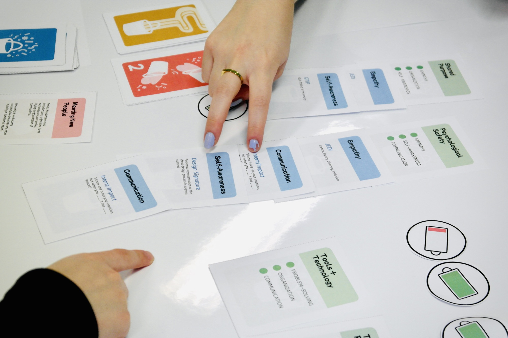

Role
Game Design Lead
Owned the rule system: turn structure, energy economy, cardholder rotation, and scoring.
A team can be lectured about collaboration, or it can be handed a system where the only way to win is to collaborate. I designed the mechanics that make “success is earned as a team” a rule, not a slogan.
Game Design Lead
Owned the rule system: turn structure, energy economy, cardholder rotation, and scoring.
Jan-May 2024
One-quarter UW HCDE Directed Research Group
10 designers and researchers
Collaborative mechanism design, card system, playtesting, and rulebook production.

Common Ground started as a UW HCDE Directed Research project. The course teaches teamwork principles, students sit through the lecture, and very little of it survives contact with their next group project. Our job was to replace that lecture with a card game a class would actually play, inside a class period, and actually remember afterwards.
Everything it teaches sits on one metaphor, drawn by the instructor. Sitting with yourself is the well you draw from alone: self-awareness is the rope, and everything under the waterline is what you brought without deciding to. Sitting with your team is what happens when your bucket meets everyone else’s. Tuckman’s stages describe that second half, where teams do not start effective but get there by moving through forming, storming, norming, and performing.
The game is a literal translation of the second drawing. A Personal Resource card is your bucket, and a Teamwork Principle does not exist until the table pools them. Which made this a systems problem rather than a content problem. The concepts were already written. What was missing was a set of rules that made a table behave that way.


My design question
How can a card game make collaboration the optimal strategy, so players learn teamwork by playing well rather than by being told to cooperate?
I designed the rule system: the eight-week turn structure, the energy economy that makes soloing impossible, the rotating cardholder, and team-only scoring. Every mechanic had to answer the same question. What behaviour does this quietly reward?
Our team delivered a class-tested cooperative card game with a full rulebook. Proposing the rulebook was my call once the beta named rule clarity as our weakest score, and we drew its 23 pages together.
With the concept settled, the question turned mechanical: what actually makes a table cooperate. So we pulled a shelf of published games apart, looking for the ones where cooperation is structural rather than decorative. Ravine, a cooperative survival game, gave us the finding we kept. A shared threat is what makes a table talk to each other. The loop we sketched that afternoon, draw personal cards, set a challenge level, present the situation, play, is still the loop in the printed game four months later.


Every round runs on three interlocking constraints I designed so that no single player can carry the team. Energy limits how much anyone can act, the cardholder role moves the spotlight around the table, and a challenge can only be cleared by a principle the team writes together.
Two things from the design board made it to print almost untouched. “Energy / Team Spirit Tokens (need better terminology)” became Energy Tokens, and “MADNESS” became Shenanigans. A third was a question on a sticky note, “personal energy/spirit tokens start with 5?”, which is why every player is dealt exactly five.


Spend to act. Run out and you cannot help, so the table has to budget effort across people rather than dump it on one player.
Rotates each round. Whoever holds it reveals the Challenge and Shenanigans cards, so authority, and pressure, stay shared rather than fixed.
One shared score for the whole team. There is no individual placement to chase, so the incentive points at the group by design.

The Cardholder uncovers that week’s Challenge. The team debates which Teamwork Principles, up to three, it will try to build.
The build phase. Every member must contribute to each Principle, either a matching Resource card or an Energy Token flipped from full to empty, and say aloud how their card answers the Challenge.
The Cardholder draws a Shenanigans card. It rewards the team or wrecks the plan. Silly business is unavoidable.
Score onto the shared Progress Tracker, discard spent Resources, draw two, and pass the Cardholder token clockwise. Repeat for all 8 weeks.
Eight weeks, four phases each, and the constraints inside them are what quietly teach the behaviour.
I could have printed “work together!” on a card. Instead the energy budget makes soloing literally impossible, the rotating cardholder stops one person from steering every round, and the shared score removes the reward for competing. The teamwork is never asked for. It is the only path the rules leave open.

The deck is not decoration. Each colour is a different lever on player behaviour. I defined what each type does, when it enters play, and how they interact so the round has tension, recovery, and the occasional curveball.

Skills each player holds: Communication, Empathy, Self-Awareness. The inputs a team combines to craft its principle, scarce enough that choosing which to spend is a real decision.

Week-by-week scenario cards such as “Someone Takes Over”, each tied to a stage of group development. They set what the team must solve and escalate as play goes on.

Crafted collectively to clear a Challenge. Each Principle lists the exact Resources needed, so “Clear Roles + Goals” only exists if the team pools Problem-Solving, Organization, and Self-Awareness.

Wildcard events that bend the round. “Pinky Promise” grants energy, “Power Outage” voids a card. They force the team to adapt and keep rounds unpredictable and social.
The deck could not just feel like teamwork. It had to carry the actual syllabus. We mapped each of the five Resource categories onto the concepts students were being taught, so playing a card means recalling course content, not inventing a platitude.

Bruce Tuckman’s 1965 model argues that a team’s dysfunction is usually a stage, not a verdict: groups move from forming (polite, unsure) through storming (friction) into norming (agreed ways of working) and performing (running on their own). He and Mary Ann Jensen added adjourning, the wind-down, in 1977. The point students are supposed to take away is that storming is normal and survivable, not a sign the team is broken.
That is exactly the kind of claim nobody believes from a slide. So the eight Weekly Challenges are numbered 1 to 8 and build on each other into a single story across the campaign: a team that meets, argues, settles, and eventually delivers. Players don’t get told which stage they’re in; they get handed its problem and have to work out of it.
The arc is uneven on purpose, because Tuckman’s stages are uneven. Storming gets more weeks than forming does; that is where teams actually spend their time and where the mechanics have the most to say. And the Shenanigans deck exists to keep the arc from being a staircase. A team can be performing beautifully in week 6 and get knocked back into storming by one card, which is the other half of the lesson. The stages are not a ladder you climb once.
Rules only prove themselves at the table. We ran the game with UW HCDE students across more than one round: a broad beta with a full class, a focused delta session for close observation, and a final run once the game was complete.
Once the full game was completed in the class, my team and I sent out a survey to the students in order to get comprehensive feedback for further iterations. Below are some of the questions and results that were recorded after the Beta test.


Averages computed from the 24 responses above. Difficulty is a calibration reading, so mid-range is the target rather than a high score.
3.9 and 4.0, the two things hardest to retrofit. Whatever we changed next could not be allowed to cost us these.
2.6 sat mid-range, which is where I wanted it. A low score here would have been a design failure; this one told me to leave the economy alone.
2.9, and the flattest spread on the sheet, with answers scattered evenly across 2, 3 and 4. Not a hard “no”, but no consensus either, which reads as confusion rather than dislike. That pointed at the on-ramp rather than the rules themselves, and it is why I pushed for the rulebook.


A rule is never neutral. It is an incentive. Once I saw that the energy budget and shared score were doing the actual teaching, every mechanic became a question: what behaviour does this quietly reward? That lens carries straight into product work on onboarding, motivation loops, and collaborative tools.
One team lost the final session to a bad Shenanigans draw, and still wrote this on their reflection sheet: “Life happens. Good teamwork prevails.” Nobody put that on a slide for them. The rules did it.

Constraints teach better than instructions. The interdependence players felt came from what the rules made impossible, not from prompts telling them to cooperate, and the playtest data confirmed that clarity rather than concept was the gap.
I’d A/B different energy budgets and cardholder-rotation rules to find which variant best sustains collaboration and post-game reflection, and prototype a digital version to capture play data at scale.